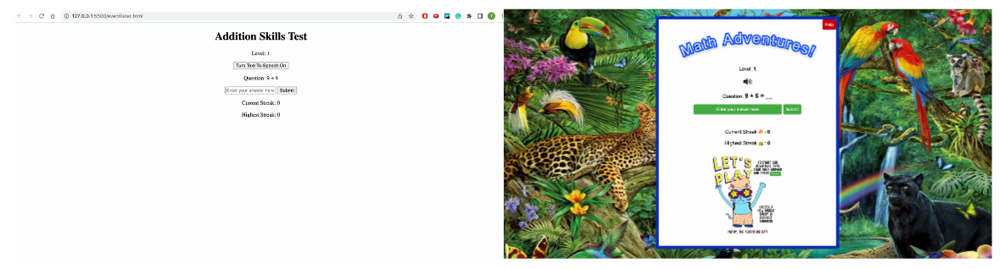

What does the application do? What is its purpose?
This application is a additional skill practice program built for english-speaking 2nd graders. Its purpose is to help students improve their additional skills by encouraging them to get multiple answers in a row. Users answer the displayed arithemic question, which increases in difficulty every level. Users submit their answer by pressing the submit button, or pressing the enter key on their keyboard. If the user answers correctly, a new problem will be random generated.
The number of currently consecutive answers is stored, and it is displayed under "Current Streak" on the webpage. The users highest streak for the session is also displayed, which is reset when the page is refreshed/ a new session starts.
For every correctly answered question, the screen displays "Correct! Great Job!" with an accompanying image of the original avatar, Mathy the Adventure Cat, randoming displaying 1 of 3 positive emotions. Every 10 correct consecutive answers is rewarded with unlocking a new background.
When users enter incorrectly, the current streak is reset to 0, and the question will not change until it is answer correctly. Mathy the Adventure Cat is displayed as having a pensive, thinking face.
When users need help, they can press the help button in the top right of the div container. This alerts the user of some ways to help them solve the problem.
For users who have sight impairments or struggle with dyscalculia, there is a speech-to-text toggle button displayed under the current level.
My Whiteboard
Accompanied by the color palette, some early lists of desired features, buttons, and my original avatar I drew for this project.
Before and After Styling
In the before, the basic crux of the given assignment was "working." At least in the sense that it accomplished about half of its real goal. The after is more equipped with all the tools really needed for successful user interactions, such as lively colors, engaging feedback, and a help button.
